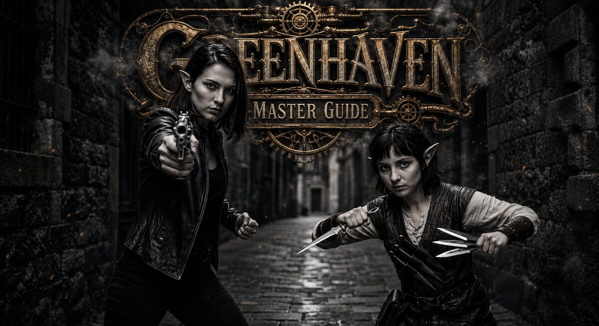

The Greenhaven Workshop
Hello.

If you have opened this folder, you have a world you want to tell — and a suspicion that an ordinary novel will not hold it. Too many people in it remember slights. Too many streets have something happening on them while the hero is standing on another one. Too many forks in the road to comb into a single linear chapter.
Greenhaven is the engine that lets worlds like that breathe. The player talks to the world in a chat window, and the world talks back: it remembers promises, takes offense, opens doors, closes others. Not "press 1 to go north" — a real conversation, in which the harbor scout remembers whether you defended a dockhand yesterday or not.
For a world like this to come alive, you have to write it down in a particular way. Not as a novel, not as a screenplay, but as a cartridge — a collection of notes the engine knows how to read. Each location, each character, each quest is its own file, written in plain language under a handful of simple rules. This guide will teach you those rules the way I would teach them if we were sitting at the same table and I were walking you through the workshop.
What this guide is
It is for writers, gamemasters, and narrative designers who want to fill the world of Greenhaven — but who do not necessarily know how to code. I will do my best to explain things so that you never have to guess at the meaning of an unfamiliar word. Any precise technical specification lives at the end of a chapter, in the Reference section. If you need exact field names, they are there. If you do not, you can skip them.
How the guide is laid out
The guide is built as a journey in three steps.
Step one — the tutorial. You will create your first vault, your first location, your first NPC, and your first quest. Within an hour you will have a tiny but living piece of world that the engine can read.
- What is a cartridge — what the world of Greenhaven is made of and how the engine reads it.
- Creating the vault — how to lay the foundation: folders, files, names.
- Your first location — how to write a place so it breathes.
- Your first NPC — how to create a character with a voice, a desire, and a fear.
- Your first quest — how to weave a quest with forks and consequences.
Step two — the references. Once you have written your first characters and you find yourself needing the exact names of sections, you open the right reference chapter.
Step three — the deeper mechanics. When you want more: a world that shifts in response to the player's choices, a companion who can leave, a merchant with a memory.
- Materializes: how the world responds
- Quest branching: real choices
- Scenes in depth: rhythm and impact
- Companions: those who walk beside you
- Economy: money as character
- Images: how the world shows itself
- Media: title screens, cards, video, and music
A few things before you start
No programming. You write plain text in Obsidian (a free editor, very much like a notebook with folders inside it). Not a line of code.
No tables of numbers. The engine works out for itself who is whose brother and where the compass is kept. Your job is to tell it in words.
Names with @ in front. The most unusual thing in this system is that
the names of characters, places, and items are written with an at-sign:
@Tessa Wrenlight. This is not decoration. It is a signal to the engine:
"a character is being named here — remember the link." These names are
never translated. If you created a character as @Tessa Wrenlight, she
remains @Tessa Wrenlight everywhere. More on this in the first tutorial
chapter.
English heading names are normal. Inside files you will see section
names such as ## Identity, ## Voice, ## Want. These are service
words — the engine recognizes them and uses them to file what you wrote
under the right field. The text underneath is your prose, in any language
you write the world in.
Where to look at a finished one. If you want to poke at a live
cartridge, one lives at C:\Greenhaven\GreenhavenWorld\GreenHavenWorld.
It is the compact three-hub sample cartridge: five playable locations plus
the city container, eleven characters, twenty quests, fourteen scenes,
visual cards, boot media, and cartridge-owned music. It is both a model and
an inspiration.
Where to begin right now
If you are short on time, jump straight to Creating the vault and follow the steps. In a quarter of an hour you will have a working vault and you can start writing your first character.
If you would rather understand how the world is put together first, open What is a cartridge.
Good luck. I will try to keep it from being boring.